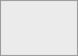

From the Finder's top menu bar, choose Go > Connect to Server…:

When the Connect to Server… window opens, enter your
https://example.com/remote.php/dav/files/USERNAME/

Click Connect. Your WebDAV server should appear on the Desktop as a shared disk drive.